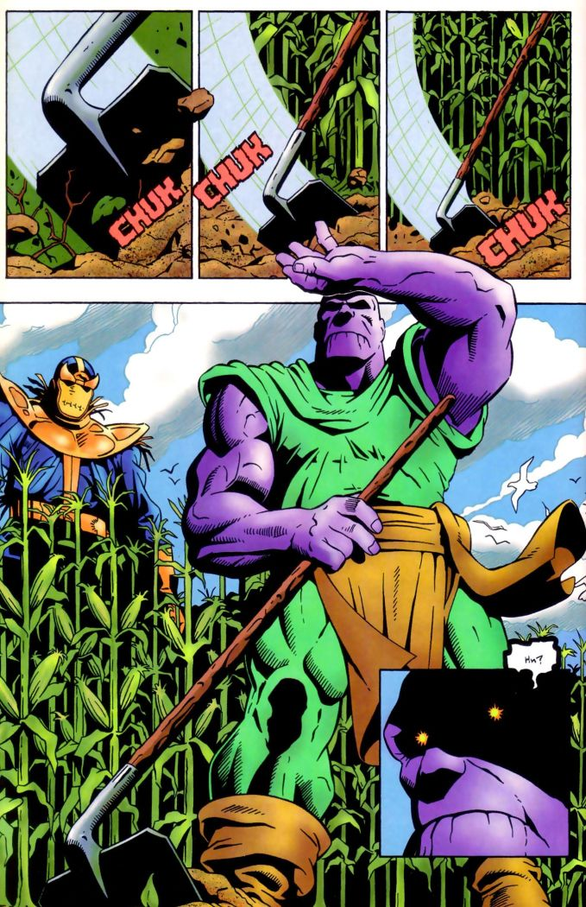

타노스(Thanos)
마블 코믹스의 등장인물로 슈퍼 빌런이다. 이름의 어원은 그리스어로 죽음을 뜻하는 '타나토스' 혹은 지옥인 타르타로스에서 따온 듯하다. 마블의 대표 빌런 중 하나이자, 마블 시네마틱 유니버스 인피니티 사가의 메인 빌런.
타이탄 종족의 왕 멘토와 왕비 수이산의 아들이다. 그는 데비언츠 증후군으로 인해 인간과 비슷한 다른 이터널들과 달리 거대하고 독특한 외모로 태어났다. 더욱 성장한 타노스는 타이탄의 다른 모든 이터널들을 뛰어넘고자 자신의 힘을 강화하는데 매진하고 타고난 사악함 탓에 허무주의와 염세주의.에 빠지는데, 이는 야망과 정복에 대한 열정으로 성장한다. 그리고 우주선을 훔쳐 다른 성계의 인원을 모집해 사병대를 창설하여 온 우주를 돌아다니며 살육과 파괴를 일삼는다.
사실 마블 코믹스에서 타노스는 메인빌런이나 최종보스가 아니라 거의 주인공급 행적을 보여준 적도 있다. 인피니티 건틀렛 사건의 엔딩 이후 거대한 힘을 내려놓고 깨달음을 얻은 뒤로는 한동안 자신을 주기적으로 찾아오는 아담 워록에게 조언을 건네주거나, 우주의 위기 앞에서 구원자 또는 현자처럼 활약하기도 하는 등 기존의 사악한 파괴자로서 쌓아올린 선입견과 달리 입체적인 매력도 보여줬다.